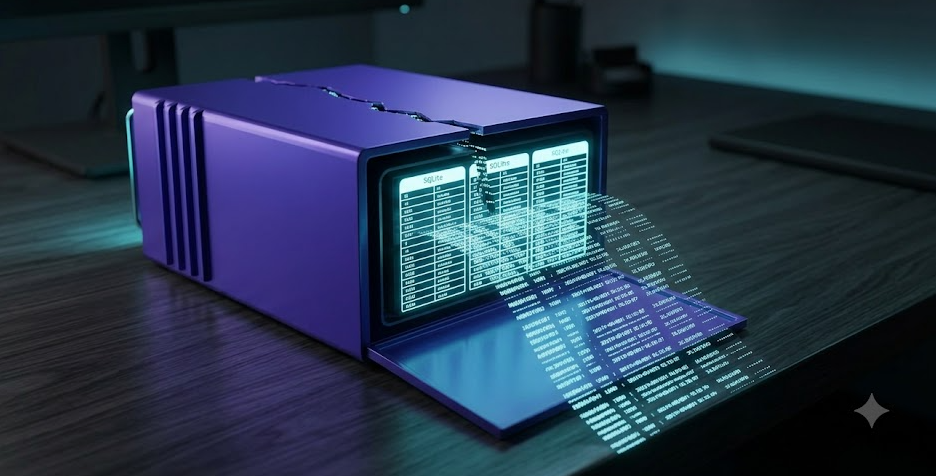
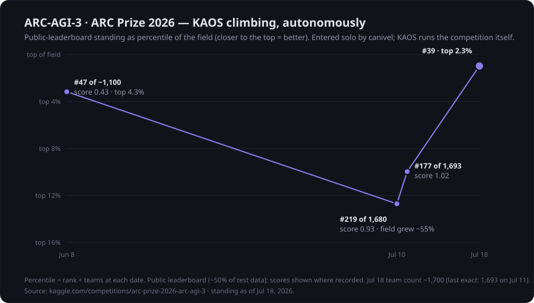
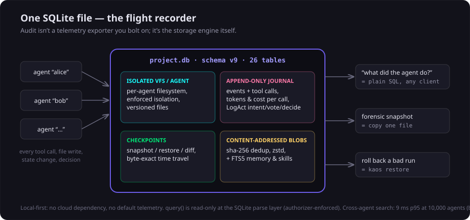
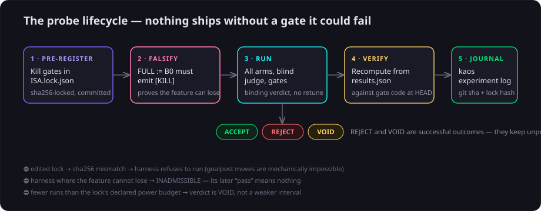
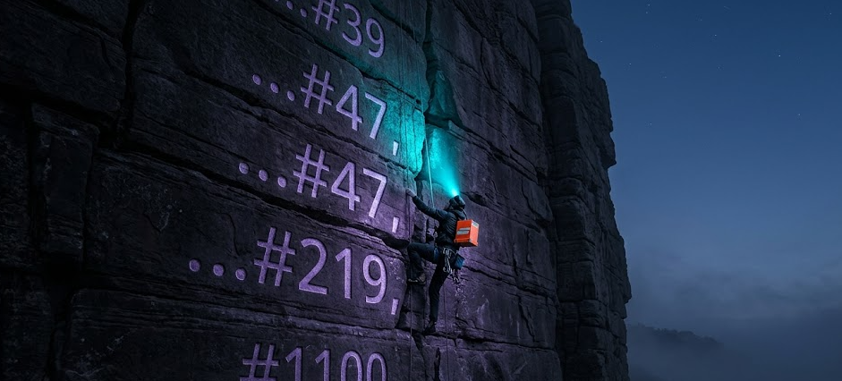

the last time i wrote here, KAOS had just shipped v0.9 — the falsifiable-eval primitive, six candidates evaluated, zero mechanisms shipped. the honest question a reader could ask back then: fine, you built a kill-switch. does any of this discipline actually cash out as capability?
two months later i have an answer i didn't expect to have this fast, and it's sitting on a public leaderboard.
the harness, doing the competing
KAOS is entered in ARC-AGI-3 (ARC Prize 2026) under my solo account — but i'm not the one competing. the meta-harness search loop proposes strategies, evaluates them, records what worked in the skill library, and submits. the same neuroplasticity and eval machinery described below is what's driving.

read the middle of that chart honestly: on jul 10 we were at #219 — the field had grown ~55% and everyone got better. no excuses, the percentile got worse. then the harness kept doing what it does — measure, keep what survives, discard what doesn't — and eight days later it's #39 of ~1,700, top 2.3%. the score more than doubled from the june baseline. i tweak the setup occasionally; the iteration loop is KAOS's own.
the panel that audited us
in june i pointed KAOS's evaluation machinery at KAOS itself: a 48-agent scoping workflow — six code reviewers over every subsystem, five research scouts over the 2026 literature, and a 36-judge panel scoring every candidate on three lenses. every finding had to cite file:line it actually read.
the uncomfortable headline: the reviewers found reproduced P0 bugs in our own verdict instrument. the blind judge's agreement statistic was computed as x == x — always 1.0, a dead gate. verify() crashed on the very results file our reference probe produces. a probe that registered zero kill-gates would auto-ACCEPT. and in the storage core: a version collision that broke delete-then-rewrite, and a reader path that held the writer lock for the whole database.
we fixed all of it red-first — every fix started as a failing test on the broken code — and shipped it as v0.9.2 within days. the framework whose pitch is "verified reliability" had holes in its verifier. finding them ourselves, publishing them, and gating the fixes is the pitch working, not failing. it's also why i trust the instrument now.
the 125× that came from a measurement
i almost made a classic architecture mistake this summer. i was convinced the single-SQLite-file design would bottleneck — that every agent needed its own database, a data-vault-style federation of shards. it's the kind of rewrite that eats two quarters and feels visionary while you're doing it.
the discipline said: measure first. so we built demo_storage_scale_bench/ and ran the actual numbers at 1,000 and 10,000 agents under 8-thread contention:
- cross-agent full-text search at 10,000 agents: 9ms p95 — ~55× under the panic line. shared structures don't degrade; the sharding premise was just false.
- the real bottleneck was write-commit contention — flat with scale, which is the tell that it's fsync policy, not data volume.
- one pragma (
synchronous=NORMAL, SQLite's own recommendation for WAL): write p95 1,895ms → 15ms, throughput 29 → 1,118 ops/s. zero lock errors.
the rewrite is dead — killed by a bench, not by a debate. a 125× win from one config line, and cross-agent memory, the hebbian graph, and the shared log all keep working because nothing got sharded. that's what "measured, not claimed" buys you: it protects you from your own architectural romances.

an outside model tried to kill our claims
last week a reviewer running Kimi audited KAOS and sent a list titled, roughly, "where KAOS would actively mislead you." this is exactly the traffic we invite — so we ran every claim against source, same as any bug report. the ledger:
| claim | verdict |
|---|---|
| inline plasticity hooks are no-ops; the graph builds in batch | CONFIRMED — the code was honest (deliberate two-timescale design), the README oversold it. rewritten. |
| "+10pp retrieval" headlines a 10-query bench — one flipped query | CONFIRMED — n now disclosed everywhere, larger-n rerun queued under the new stats protocol. |
| verifier's "LLM mode" is documented but unimplemented | CONFIRMED — docstring now says heuristic-only; implement-or-remove is on the v0.10 list. |
| the policies table is scaffold nothing consults | REFUTED — stale read; the consumer loop closed in v0.8.2 (intent_auto()). |
| the ARC simulation bench pretends to be performance signal | REFUTED — its README says "simulated" in the title line; the real signal is the kaggle leaderboard above. |
net: three real documentation-integrity bugs, fixed same-day; the strongest accusations didn't survive contact with the source. the detail i keep thinking about: in every confirmed case, the code was more honest than the docs. the two-timescale no-op design is something we defended with a probe back in the synthesis arc — and then the README drifted into marketing it as magic. docs rot toward flattery. instruments don't.
what shipping looks like under the discipline
everything above ran through the same machine, which since v0.9.1 is fully exposed as CLI + 58 MCP tools:

and because the CLI exits non-zero on REJECT/VOID, your own harness changes can gate in CI exactly like code:
# prove the probe can kill the feature, then run for the binding verdict
kaos eval probe falsify --probe bench.my_probe:MyProbe
kaos eval probe run --probe bench.my_probe:MyProbe --out-dir out/ # CI fails unless ACCEPT
# institutional memory — what have we tried, what changed?
kaos experiment list --verdict-prefix REJECT
kaos experiment compare 41 42what you can do with it, today
run a swarm from your editor. after kaos setup, it's an MCP server — "with kaos, review my payments module — a security agent and a test-writing agent in parallel" — and every agent lands isolated, checkpointed, on the gantt dashboard.
audit anything with SQL. the whole estate is one file. kaos query "SELECT tool_name, SUM(cost_usd) FROM tool_calls GROUP BY 1" is your spend report; copying the file is your forensic snapshot; kaos restore is your undo. (if the EU AI Act's logging article applies to you, this is that requirement, already met by the storage engine.)
let the library earn its ranking. outcomes recorded as telemetry rerank retrieval by what actually worked — wilson bounds and recency, arithmetic on evidence, not an LLM rewriting its own notes. numbers and their (small, disclosed) n's live next to the benches in the repo.
gate your own agent changes. the probe machinery isn't just for us — examples/falsifiable_probe.py is a complete template. write the gates before the feature, wire the probe into CI, and "did that prompt change actually help?" stops being a vibe.

the ledger, and what's next
since v0.7: ten mechanism candidates evaluated, zero shipped on hope. SAGE, two flavors of synthesis-as-consolidation, AutoResearchClaw, HASP, Life-Harness's action layer, UserHarness, per-agent-DB sharding, MATM, Atomic Task Graph — rejected, voided, or parked, each with its lock and audit trail in the repo. the moat isn't any single mechanism; it's that nothing gets in without surviving this.
next: the last v0.10 items (verifiable numeric reporting — every number in a generated artifact traces to a recorded measurement), the v0.10.0 cut, and then the cycle i'm most excited about: the federation package layer — signed, capability-declared agent packages you can share across teams, on the single-file architecture the bench just vindicated. and ARC-AGI-3 has four months left on the clock. the harness is still climbing.
— danilo